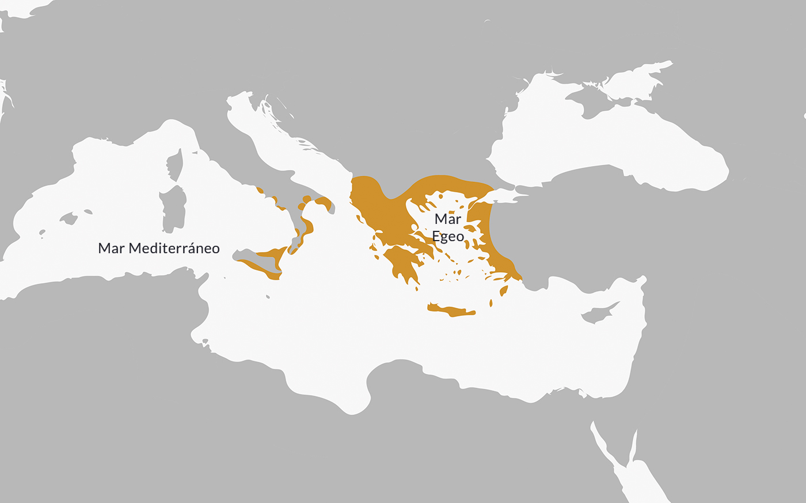
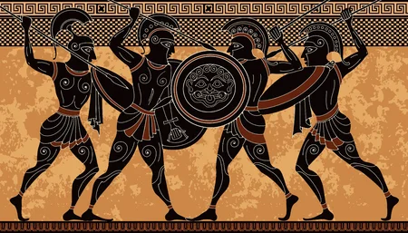

La Antigua Grecia
Descubre la historia, tradiciones y arte
¿Qué fue la Antigua Grecia?
La Antigua Grecia fue una civilización de la antigüedad que se asentó en el sur de la península balcánica y desde allí se expandió hacia otras áreas del mar Mediterráneo, a partir de los siglos X y IX a. C. La cultura griega ejerció una extraordinaria influencia sobre otras civilizaciones que entraron en contacto con ella, especialmente la civilización romana. Su estructura de razonamiento lógico junto con su desarrollo filosófico constituyen la base de la cultura occidental hasta la actualidad.
El conocido nombre de «griegos» fue puesto por los romanos; a sí mismos ellos se llamaban helenos, y a su territorio, Hélade.
Ubicación de la Antigua Grecia
Las ciudades griegas se ubicaron en el sur de la península balcánica y en los archipiélagos e islas que la rodean. Además, a través de sucesivas oleadas migratorias establecieron colonias en la costa de Asia Menor y en el sur de Italia, conocido como la magna Grecia.
Períodos históricos de la Antigua Grecia
La oleada migratoria de grupos que conformaron las poblaciones griegas, propiamente dichas, llegaron probablemente desde el norte y se asentaron en el territorio balcánico, alrededor del 1800 a. C. En dicho territorio, tanto peninsular como insular, se desarrollaron distintas civilizaciones que dejaron su impronta en la cultura griega, entre ellas la minoica, en la isla de Creta, y la micénica, en el continente. Durante el auge de la civilización micénica se produjo la guerra de Troya.